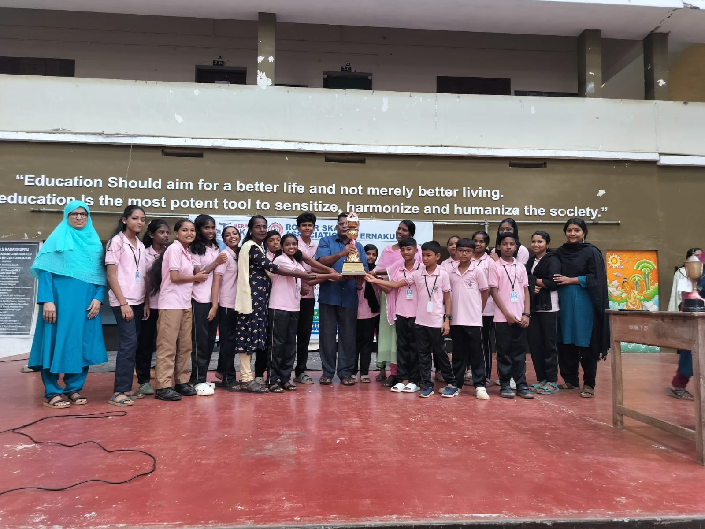
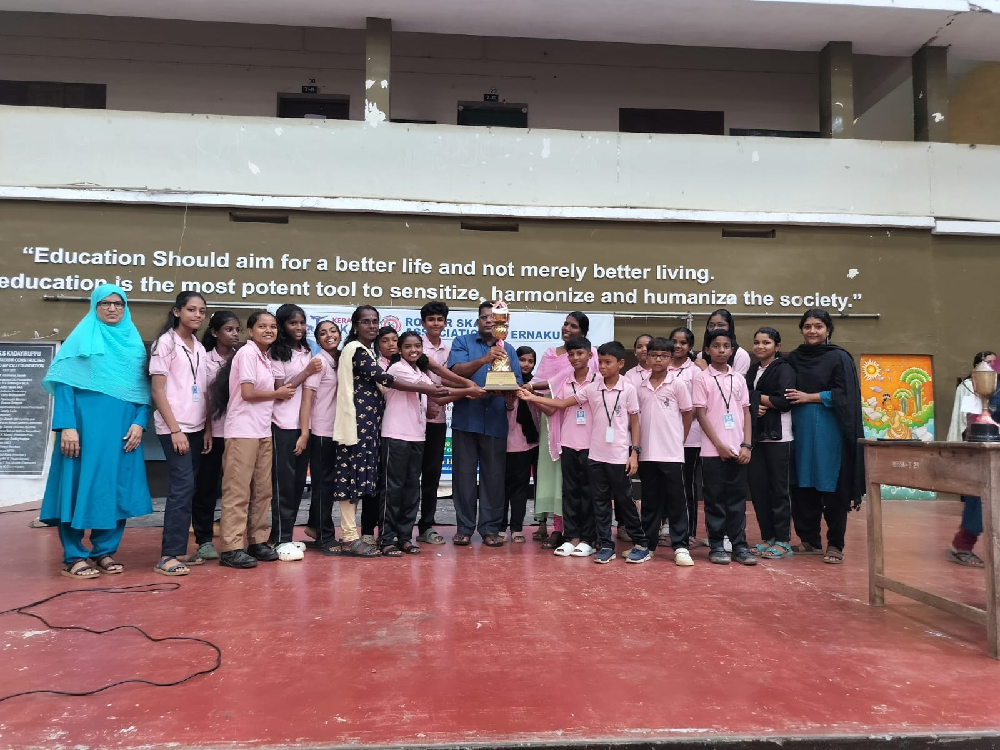

Little Kites
Student IT Network
Little Kites is a pioneering student IT initiative under the Kerala Infrastructure and Technology for Education (KITE) mission. At GHSS Kadayiruppu, this club acts as a bridge between students and technology, promoting digital literacy and empowering young minds with practical ICT skills.
Members of the Little Kites club undergo training in various areas like coding, graphic design, animation, video editing, robotics, and cybersecurity. The club operates with the core belief that digital empowerment from school level can shape a tech-savvy and innovation-driven generation.
Beyond technical training, students contribute by creating digital posters, school event invitations, student projects, and videos. The club also organizes ICT exhibitions and inter-school tech competitions, where members demonstrate their innovations to the community.
In collaboration with KITE, the club emphasizes ethical internet use, data privacy, and safe online behavior. Every student becomes an ambassador of digital responsibility, ensuring inclusive and secure use of technology within and beyond school.
- Training in Scratch, HTML, Python, and App Development
- Digital Poster Design & School Event Support
- Cybersecurity & Internet Safety Workshops
- Participation in KITE ICT Fests
- Peer Tutoring & Tech Helpdesk

 
